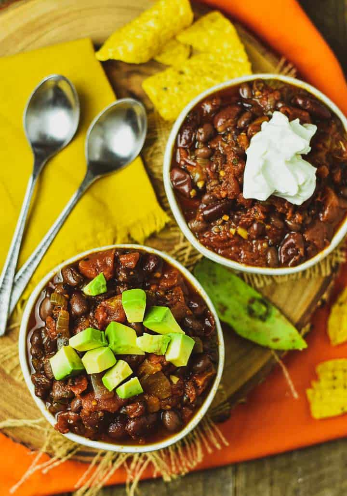

Instant Pot Vegan Chili
Description
This Instant Pot Vegan Chili is the BEST vegan chili recipe you will eat or need this year! It's so easy to make, uses only a few simple ingredients, and is ready in no time at all. Guaranteed to satisfy vegans, vegetarians, and meat-eaters.
Ingredients
- 1 onion, diced
- 3 cloves garlic, minced
- 1 jalopeno pepper, finely chopped (with seeds)
- 2 Tbsp chili powder
- 2 tsp cumin
- 2 tsp smoked paprika
- 1 tsp oregano
- 1 1/2 cups of vegetable broth
- 2 14-oz cans of fire roasted tomatoes
- 2 15-oz cans of red kidney beans, drained and rinsed
- 1 15-oz can of black beans, drained and rinsed
- 1 Tbsp maple syrup
Steps
- Hit the “Saute” button on your Instant Pot. When it's ready add the onions, garlice, chili powder, cumin, smoked paprika, oregano, and chopped jalopeno. Add 2 Tbsp. of water or veggie broth to the pot to prevent sticking if necessary. Give everything a stir let toast for 2 minutes.
- Add all remaining ingredients to the Instant Pot, stir and make sure everything is well combined, lock the lid, and seal the vent.
- Set to cook on manual high pressure for 5 minutes.
- When time is up, do a “quick release” by turning the release valve to “venting” and remove the lid.
- Serve in individual bowls with desired toppings.
- Store in the fridge up to 3 days or in the freezer for a month.